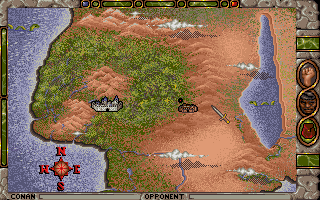
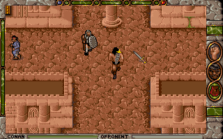
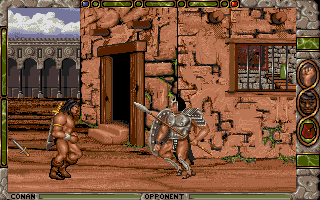

名稱：王者之劍 (Conan The Cimmerian，英文版)
簡介：Synergistic 1991年出品的動作冒險遊戲，兼具角色扮演遊戲的元素，由Virgin代理
發行，台灣由新世界代理進口 [待補]。



備註：本版為1993年光碟加強版（Enhanced Edition）
保護：光碟版為光碟，磁片版為符號密碼。
磁片版破解碼（僅適用於1991/8/22新世界代理版）：
START.EXE (先用UNLZEXE解壓)
80 3E C0 51 00 74 03 (共2個)
-- -- -- -- -- 90 90
B0 01 A2 C0 51 0A C0 74 17
-- -- -- -- -- -- -- EB --
備註：光碟增強版內定使用沒有字幕的語音，英文聽力不好的玩家，可進入遊戲後，按上方
左邊的藍圓點，選擇Toggle Sound關閉語音，改用文字。
檔案：conan-disk.rar = 1991/8/22新世界代理磁片版（另有未破解的1991/9/16版）